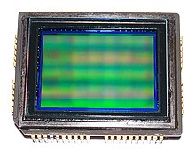
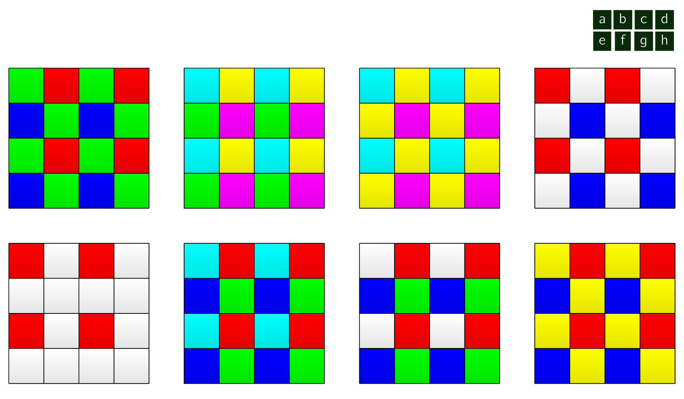
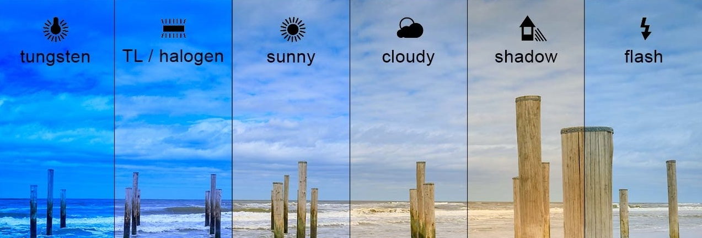
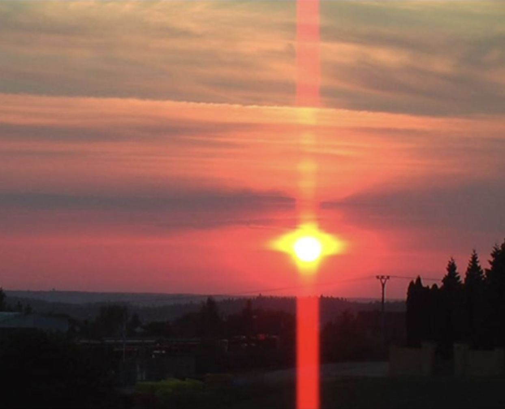
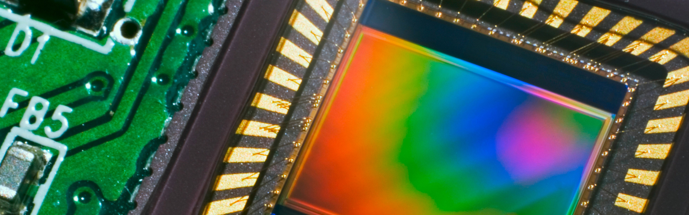
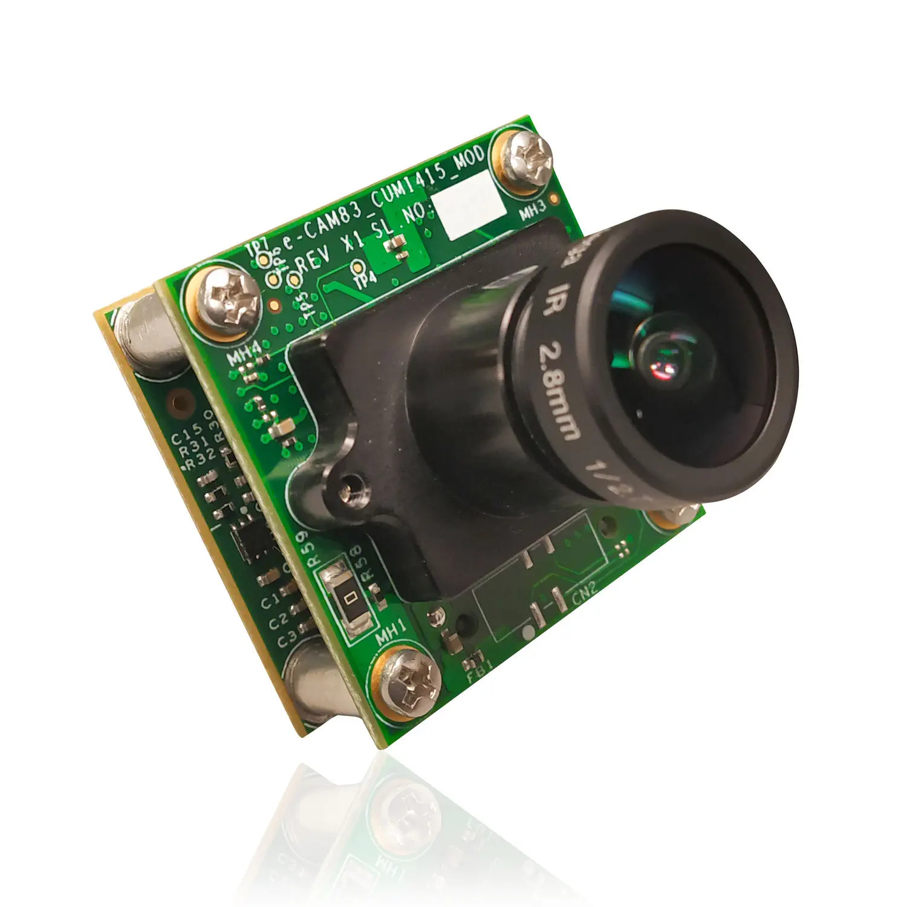
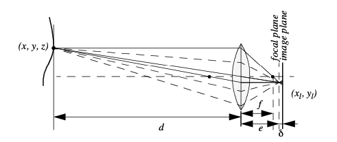
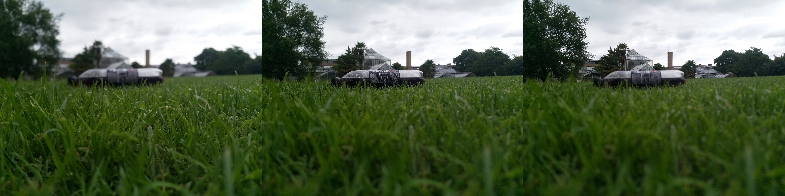

Vision is our most powerful sense. It provides us with an enormous amount of information about the
environment and enables rich, intelligent interaction in dynamic environments. 
The first step in this process is the creation of sensing devices that capture the same raw information
which is the light the human vision system uses. The main topics which will be described are the two
(
- 1.
- CCDCharge Coupled DeviceCharge Coupled Device,
- 2.
- CMOSComplimentary MOSComplimentary MOS.
Of course, these sensors have specific limitations in performance compared to the human eye, and it is important to understand these limitations.
Later sections describe vision-based sensors which are commercially available, similar to the sensors discussed previously, along with their disadvantages and most popular applications.
When it comes to the marketplace, CCDCharge Coupled DeviceCharge Coupled Device is the most popular fundamental ingredient for robotic vision systems. (...) Willard Boyle and George E. Smith invented the CCDCharge Coupled DeviceCharge Coupled Device in 1969 at AT&T Bell Labs. Their original idea was to create a memory device. However, with its publication in 1970, other scientists began experimenting with the technology on a range of applications. Astronomers discovered that they could produce high-resolution images of distant objects, because CCDs offered a photo-sensitivity one hundred times greater than film [†]TeledyneCCD. How a Charge Coupled Device (CCD) Image Sensor Works 2020. The CCDCharge Coupled DeviceCharge Coupled Device chip, is an array of light-sensitive picture elements, or pixels, usually with between 20000 and 2 million pixels total.
Each pixel can be thought of as a
This requires specialised control circuitry and custom fabrication techniques to ensure the stability of transported charges.
The photo-diodes used in CCDCharge Coupled DeviceCharge Coupled Device chips (...)
This also
includes CMOSComplimentary MOSComplimentary MOS as well. are NOT
It is important to remember photodiodes are less sensitive to the ultraviolet part of the spectrum and are overly sensitive to the infrared portion (e.g. heat) which we see in Fig. 2.16. You can see that the basic light-measuring process is colourless. (...) It is just measuring the total number of photons that strike each pixel in the integration period regardless whether the light hitting it is blue, red or green.
Capturing Colour
There are two (

The number of pixels in the system has been effectively cut by a factor of 4, and therefore the image resolution output by the CCDCharge Coupled DeviceCharge Coupled Device camera will be sacrificed.
The 3-chip color camera avoids these problems by splitting the incoming light into three (
Resolution is preserved in this solution, although the 3-chip color cameras are, as one would expect, significantly more expensive and therefore more rarely used in mobile robotics.
Both 3-chip and single chip color CCDCharge Coupled DeviceCharge Coupled Device cameras suffer from the fact that photo-diodes are much more sensitive to the near-infrared end of the spectrum. This means that the overall system detects blue light much more poorly than red and green. To compensate, the gain must be increased on the blue channel, and this introduces greater absolute noise on blue (...) This is generally defined as the amplifier noise. than on red and green. It is not uncommon to assume at least 1 - 2 bits of additional noise on the blue channel.
The CCDCharge Coupled DeviceCharge Coupled Device camera has several camera parameters which affect its behavior. In some cameras, these parameter values are fixed. In others, the values are constantly changing based on built-in feedback loops. In higher-end cameras, the user can modify the values of these parameters via software embedded into the device. The iris position and shutter speed (...) It’s the speed at which the shutter of the camera closes. A fast shutter speed creates a shorter exposure, the amount of light the camera takes in, and a slow shutter speed gives a longer exposure. regulate the amount of light being measured by the camera. The iris is simply a mechanical aperture that constricts incoming light, just as in standard cameras. Shutter speed regulates the integration period of the chip.
Camera gain controls the overall amplification of the analog signal, prior to A/D conversion. However, it is very important to understand that, even though the image may appear brighter after setting high gain, the shutter speed and iris may not have changed at all. Thus gain merely amplifies the signal, and amplifies along with the signal all of the associated noise and error.
Although useful in applications where imaging is done for human consumption, (...) e.g. photography, television. gain is of little value to a mobile roboticist.
In colour cameras, an additional control exists for white balance. Depending on the source of illumination in a scene (...) For example this could be fluorescent lamps, incandescent lamps, sunlight, underwater filtered light, etc. the relative measurements of red, green and blue light which combine to define pure white light will change dramatically which can be seen in Fig. 2.18 which can also be adjusted with algorithms [†]Hirakawa, K. & Parks, T. Chromatic adaptation and white-balance problem in IEEE International Conference on Image Processing 2005 3 (2005), III–984. The human eyes compensate for all such effects in ways that are not fully understood, however, the camera can demonstrate glaring inconsistencies in which the same table looks blue in one image, taken during the night, and yellow in another image, taken during the day. White balance controls enable the user to change the relative gain for red, green and blue in order to maintain more consistent color definitions in varying contexts.

The key disadvantages of CCDCharge Coupled DeviceCharge Coupled Device cameras are primarily in the areas of inconstancy and dynamic range.
Dynamic range in photography describes the ratio between the maximum and minimum measurable light intensities (white and black, respectively). In the real world, one never encounters true white or black - only varying degrees of light source intensity and subject reflectivity. Therefore the concept of dynamic range becomes more complicated, and depends on whether you are describing a capture device (such as a camera or scanner), a display device (such as a print or computer display), or the subject itself.
As mentioned above, a number of parameters can change the brightness and colours with which a camera creates its image.
Manipulating these parameters in a way to provide consistency over time and over environments, for example ensuring a green shirt always looks green, and something dark grey is always dark grey, remains an open problem [†]Ilie, A. & Welch, G. Ensuring color consistency across multiple cameras in Tenth IEEE International Conference on Computer Vision (ICCV’05) Volume 1 2 (2005), 1268–1275.
The second type of disadvantages relates to the behavior of a CCDCharge Coupled DeviceCharge
Coupled Device chip in environments with 
Quantum efficiency (QE) is the measure of the effectiveness of an imaging device to convert incident photons into electrons. For example, if a sensor had a QE of 100% and was exposed to 100 photons, it would produce 100 electrons of signal.
In practice, sensors are never 100% efficient, and different sensor technologies have different QE values. The highest-end scientific cameras can achieve up to 95% QE but this is dependent on the wavelength of light being detected, as seen in Figure 1.

The Complementary Metal Oxide Semiconductor (CMOSComplimentary MOSComplimentary MOS)
chip is a significant departure from the CCDCharge Coupled DeviceCharge Coupled Device. Similar to
CCDCharge Coupled DeviceCharge Coupled Device, it too has an array of pixels, but located alongside
each pixel are
Using more traditional traces from general semiconductor chips, the resulting pixel values are all
carried to their destinations. CMOSComplimentary MOSComplimentary MOS has a number of
advantages over CCDCharge Coupled DeviceCharge Coupled Device technologies. First and foremost,
there is no need for the specialized clock drivers and circuitry required in the CCDCharge Coupled
DeviceCharge Coupled Device to transfer each pixel’s clock down all of the array columns and across all
of its rows. 
This also means that specialized semiconductor manufacturing processes are NOT required to create CMOSComplimentary MOSComplimentary MOS chips.
Therefore, the same production lines creating microchips can create inexpensive CMOSComplimentary MOSComplimentary MOS chips as well. The CMOSComplimentary MOSComplimentary MOS chip is so much simpler that it consumes significantly less power, it operates with a power consumption a tenth the power consumption of a CCDCharge Coupled DeviceCharge Coupled Device chip [†]Holst, T. & Lomheim, G. CMOS/CCD Sensors (JCD publishing, 2007).
In a AMRAutonomous Mobile RoboticsAutonomous Mobile Robotics, power is a scarce resource and therefore this is an important advantage.
On the other hand, the CMOSComplimentary MOSComplimentary MOS chip also faces several disadvantages.
-
Most importantly, the circuitry next to each pixel consumes valuable real estate on the face of the light-detecting array. Many photons hit the transistors rather than the photodiode, making the CMOSComplimentary MOSComplimentary MOS chip significantly less sensitive than an equivalent CCDCharge Coupled DeviceCharge Coupled Device chip.
-
CMOSComplimentary MOSComplimentary MOS, compared to CCDCharge Coupled DeviceCharge Coupled Device is still finding ground in the marketplace, and as a result, the best resolution that one can purchase in CMOSComplimentary MOSComplimentary MOS format continues to be far inferior to the best CCDCharge Coupled DeviceCharge Coupled Device chips available.
-
CMOSComplimentary MOSComplimentary MOS sensors have a lower dynamic range,
-
CMOSComplimentary MOSComplimentary MOS sensors have higher levels of noise.
Compared to the human eye, these chips all have worse performance, cross-sensitivity and a limited dynamic range. As a result, vision sensors today continue to be fragile. Only over time, as the underlying performance of imaging chips improves, will significantly more robust vision-based sensors for AMRAutonomous Mobile RoboticsAutonomous Mobile Roboticss be available.
Shot noise or Poisson noise is a type of noise which can be modeled by a Poisson process.
In electronics shot noise originates from the discrete nature of electric charge. Shot noise also occurs in photon counting in optical devices, where shot noise is associated with the particle nature of light.
Range sensing is extremely important in AMRAutonomous Mobile RoboticsAutonomous Mobile Robotics as it is a basic input for successful obstacle avoidance. As we have seen earlier, a number of sensors are popular in AMRAutonomous Mobile RoboticsAutonomous Mobile Robotics, specifically for their ability to recover depth estimates:
It is natural to attempt to implement ranging functionality using vision chips as well. However, a fundamental problem with visual images makes rangefinding relatively difficult.
Any vision chip collapses the three-dimensional world into a two-dimensional image plane, thereby
Without such assumptions, a single picture does NOT provide enough information to recover spatial information.
The general solution is to recover depth by looking at several images of the scene to gain more
information, which will be hopefully enough to at least partially recover depth. The images used
This is the fundamental idea behind depth from focus and depth from defocus techniques.
We will now look into the general approach to the depth from focus techniques as it presents a straightforward and efficient way to create a vision-based range sensor.

The depth from focus class of techniques relies on the fact that image properties NOT only
change as a function of the
|
| (2.7) |
If the image plane is located at distance
from the lens, then for the specific object voxel (...)
A three-dimensional counterpart
to a pixel. depicted, all light will be focused at a single point on the image plane
and the object voxel will be focused. However, when the image plane is NOT at
, as is seen
in Fig. 2.21, then the light from the object voxel will be cast on the image plane as a
| (2.8) |
where is the diameter of the lens or aperture and is the displacement of the image plan from the focal point.

Given these formulae, several basic optical effects are clear.
This is consistent with the fact that decreasing the iris aperture opening causes the depth of field to increase until all objects are in focus. Of course, the disadvantage of doing so is that we are allowing less light to form the image on the image plane and so this is practical only in bright circumstances.
The second property to be deduced from these optics equations relates to the sensitivity of blurring as a function of the distance from the lens to the object.
Increase the object distance to d = 2 and as a result = 0.533. Using Equation (4.20) in each case we can compute R = 0.02 R = 0.08 respectively. This demonstrates high sensitivity for defocusing when the object is close to the lens. In contrast suppose the object is at d = 10. In this case we compute e = 0.526. But if the object is again moved one unit, to d = 11, then we compute e = 0.524. Then resulting blur circles are R = 0.117 and R = 0.129, far less than the quadrupling in R when the obstacle is 1/10 the distance from the lens. This analysis demonstrates the fundamental limitation of depth from focus techniques: they lose sensitivity as objects move further away (given a fixed focal length). Interestingly, this limitation will turn out to apply to virtually all visual ranging techniques, including depth from stereo and depth from motion. Nevertheless, camera optics can be customised for the depth range of the intended application. For example, a "zoom" lens with a very large focal length f will enable range resolution at significant distances, of course at the expense of field of view. Similarly, a large lens diameter, coupled with a very fast shutter speed, will lead to larger, more detectable blur circles. Given the physical effects summarised by the above equations, one can imagine a visual ranging sensor that makes use of multiple images in which camera optics are varied (e.g. image plane displacement ) and the same scene is captured (see Fig. 4.20). In fact this approach is not a new invention. The human visual system uses an abundance of cues and techniques, and one system demonstrated in humans is depth from focus. Humans vary the focal length of their lens continuously at a rate of about 2 Hz. Such approaches, in which the lens optics are actively searched in order to maximise focus, are technically called depth from focus. In contrast, depth from defocus means that depth is recovered using a series of images that have been taken with different camera geometries.
Depth from focus methods are one of the simplest visual ranging techniques. To determine the range to an object, the sensor simply moves the image plane, by focusing, until maximizing the sharpness of the object. When the sharpness is maximised, the corresponding position of the image plane directly reports range. Some autofocus cameras and virtually all autofocus video cameras use this technique. Of course, a method is required for measuring the sharpness of an image or an object within the image. T
he most common techniques are approximate measurements of the sub-image gradient:
|
| (2.9) |
A significant advantage of the horizontal sum of differences technique given in Eq. (2.9) is that the calculation can be implemented in analog circuitry using just a rectifier, a low-pass filter and a high-pass filter. (...) This is a common approach in commercial cameras and video recorders. Such systems will be sensitive to contrast along one particular axis, although in practical terms this is rarely an issue.
However depth from focus is an active search method and will be slow as it takes time to change the focusing parameters of the camera, using for example a servo-controlled focusing ring.
For this reason this method has not been applied to AMRAutonomous Mobile RoboticsAutonomous Mobile Roboticss.
Case Study
A variation of the depth from focus technique has been applied to a AMRAutonomous Mobile
RoboticsAutonomous Mobile Robotics, demonstrating obstacle avoidance in a variety of environments
as well as avoidance of concave obstacles such as steps and ledges [†]Nourbakhsh, I. R. et al. Mobile
robot obstacle avoidance via depth from focus. Robotics and Autonomous Systems 22, 151–158 (1997).
This robot uses three (
This is due to a subtle but important issue. Many cameras produce images in
By comparing only even-number rows we avoid this interlacing side effect.
Recall that the three images are each taken with a camera using a different focus position. Based on the focusing position, we call each image close, medium or far. A 5x3 coarse depth map of the scene is constructed quickly by simply comparing the sharpness values of each three corresponding regions. Thus, the depth map assigns only two bits of depth information to each region using the values close, medium and far. The critical step is to adjust the focus positions of all three cameras so that flat ground in front of the obstacle results in medium readings in one row of the depth map. Then, unexpected readings of either close or far will indicate convex and concave obstacles respectively, enabling basic obstacle avoidance in the vicinity of objects on the ground as well as drop-offs into the ground. Although sufficient for obstacle avoidance, the above depth from focus algorithm presents unsatisfyingly coarse range information. The alternative is depth from defocus, the most desirable of the focus-based vision techniques. Depth from defocus methods take as input two or more images of the same scene, taken with different, known camera geometry. Given the images and the camera geometry settings, the goal is to recover the depth information of the three-dimensional scene represented by the images. We begin by deriving the relationship between the actual scene properties (irradiance and depth), camera geometry settings and the image g that is formed at the image plane. The focused image f(x,y) of a scene is defined as follows. Consider a pinhole aperture (L=0) in lieu of the lens. For every point p at position (x,y) on the image plane, draw a line through the pinhole aperture to the corresponding, visible point P in the actual scene. We define f(x,y) as the irradiance (or light intensity) at p due to the light from P. Intuitively, f(x,y) rep- resents the intensity image of the scene perfectly in focus
The point spread function h(x , y , x , y , R ) is defined as the amount of irradiance g g f f x,y from point P in the scene (corresponding to (x , y ) in the focused image f that contributes ff to point (x , y ) in the observed, defocused image g. Note that the point spread function gg depends not only upon the source, (x , y ), and the target, (x , y ), but also on R, the blur ff gg circle radius. R, in turn, depends upon the distance from point P to the lens, as can be seen by studying Equations (4.19) and (4.20). Given the assumption that the blur circle is homogeneous in intensity, we can define h as follows:
|
| (2.10) |
Intuitively, point P contributes to the image pixel ( x , y ) only when the blur circle of point gg P contains the point (x , y ). Now we can write the general formula that computes the value gg ofeachpixelintheimage, (x, y),asafunctionofthepointspreadfunctionandthefocused image:
This equation relates the depth of scene points via R to the observed image g. Solving for R would provide us with the depth map. However, this function has another unknown, and that is f, the focused image. Therefore, one image alone is insufficient to solve the depth recovery problem, assuming we do not know how the fully focused image would look. Given two images of the same scene, taken with varying camera geometry, in theory it will be possible to solve for g as well as R because f stays constant. There are a number of algo- rithms for implementing such a solution accurately and quickly. The classical approach is known as inverse filtering because it attempts to directly solve for R, then extract depth in- formation from this solution. One special case of the inverse filtering solution has been demonstrated with a real sensor. Suppose that the incoming light is split and sent to two cameras, one with a large aperture and the other with a pinhole aperture [94]. The pinhole aperture results in a fully focused image, directly providing the value of f. With this ap- proach, there remains a single equation with a single unknown, and so the solution is straightforward. Pentland has demonstrated such a sensor, with several meters of range and better than 97% accuracy. Note, however, that the pinhole aperture necessitates a large amount of incoming light, and that furthermore the actual image intensities must be normal- ized so that the pinhole and large-diameter images have equivalent total radiosity. More re- cent depth from defocus methods use statistical techniques and characterization of the problem as a set of linear equations [93]. These matrix-based methods have recently achieved significant improvements in accuracy over all previous work. In summary, the basic advantage of the depth from defocus method is its extremely fast speed. The equations above do not require search algorithms to find the solution, as would the correlation problem faced by depth from stereo methods. Perhaps more importantly, the depth from defocus methods also need not capture the scene at different perspectives, and are therefore unaffected by occlusions and the disappearance of objects in a second view. As with all visual methods for ranging, accuracy decreases with distance. Indeed, the accu- racy can be extreme; these methods have been used in microscopy to demonstrate ranging at the micrometer level.
Stereo Vision
Stereo vision is one of several techniques in which we recover depth information from two
(
Geometry of a Stereo
First, we consider a simplified case in which two (
|
| (2.11) |
and (out of the plane of the page)
Zero crossings of Laplacian of Gaussian
The zero crossings of Laplacian of Gaussian (ZLoG) is a strategy for identifying features in the left and right camera images that are stable and will match well, yielding high-quality stereo depth recovery. This approach has seen tremendous success in the field of stereo vi- sion, having been implemented commercially in both software and hardware with good re- sults. It has led to several commercial stereo vision systems and yet it is extremely simple. Here we summarize the approach and explain some of its advantages.
The core of ZLoG is the Laplacian transformation of an image. Intuitively, this is nothing more than the second derivative. Formally, the Laplacian L(x,y) of an image with intensities I(x,y) is defined as:
Motion and Optical Flow
A great deal of information can be recovered by recording time varying images from a fixed (...) or moving. camera.
Firstly we distinguish between the motion field and optical flow:
- Motion field
-
this assigns a velocity vector to every point in an image. If a point in the environment moves with velocity , then this induces a velocity in the image plane. It is possible to determine mathematically the relationship between and .
- Optical Flow
-
:it can also be true that brightness patterns in the image move as the object that causes them moves (light source). Optical flow is the apparent motion of these brightness patterns.
In our analysis here we assume that the optical flow pattern will correspond to the motion field, although this is not always true in practice. This is illustrated in figure 4.26a where a sphere exhibits spatial variation of brightness, or shading, in the image of the sphere since its surface is curved. If the surface moves however, this shading pattern will not move - hence the optical flow is zero everywhere even though the motion field is not zero. In figure 4.26a, the opposite occurs. Here we have a fixed sphere with a moving light source. The shading in the image will change as the source moves. In this case the optical flow is nonzero but the motion field is zero. If the only information accessible to us is the optical flow and we depend on this, we will get false results.
Optical Flow Let E (x, y, t) be the image irradiance at time t at the image point (x, y). If u (x, y) and v (x, y) are the x and y components of the optical flow vector at that point, we need to search a new image for a point where the irradiance will be the same at time t+t, i.e.: at point (x+x, y+y), where x = ut and x = ut. i.e:
|
| (2.12) |
for a small time interval . From this single constraint u and v cannot be determined unique- ly. We therefore use the fact that the optical flow field should be continuous almost every- where. Hence if brightness varies smoothly with x, y and t we can expand the left hand side
Colour Tracking Sensors
While depth from stereo will definitely prove to be a popular application of vision-based methods to AMRAutonomous Mobile RoboticsAutonomous Mobile Robotics, it mimics the functionality of existing sensors, including ultrasonic, laser and optical rangefinders.
An important aspect of vision-based sensing is that the vision chip can provide sensing modalities and cues that no other mobile robot sensor provides. One such novel sensing modality is detecting and tracking color in the environment. Color represents an environmental characteristic that is orthogonal to range, and it represents both a natural cue and an artificial cue that can provide new information to an AMRAutonomous Mobile RoboticsAutonomous Mobile Robotics.
Color sensing has two important advantages.
- 1.
- First, detection of color is a straightforward function of a single image, therefore no correspondence problem need be solved in such algorithms.
- 2.
- Second, because color sensing provides a new, independent environmental cue, if it is combined (...) i.e. sensor fusion. with existing cues, such as data from stereo vision or laser rangefinding we can expect significant information gains.